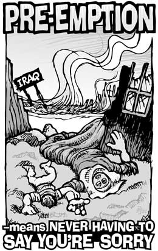

|

Preventive War, the Supreme Crime
Iraq: invasion that will live in infamy
- - - - - - - - - -
by Noam Chomsky
 EPTEMBER 2002 was marked by three events of considerable importance, closely related. The United States, the most powerful state in history, announced a new national security strategy asserting that it will maintain global hegemony permanently. Any challenge will be blocked by force, the dimension in which the US reigns supreme. At the same time, the war drums began to beat to mobilise the population for an invasion of Iraq. And the campaign opened for the mid-term congressional elections, which would determine whether the administration would be able to carry forward its radical international and domestic agenda. EPTEMBER 2002 was marked by three events of considerable importance, closely related. The United States, the most powerful state in history, announced a new national security strategy asserting that it will maintain global hegemony permanently. Any challenge will be blocked by force, the dimension in which the US reigns supreme. At the same time, the war drums began to beat to mobilise the population for an invasion of Iraq. And the campaign opened for the mid-term congressional elections, which would determine whether the administration would be able to carry forward its radical international and domestic agenda.
The new "imperial grand strategy", as it was termed at once by John Ikenberry writing in the leading establishment journal, presents the US as "a revisionist state seeking to parlay its momentary advantages into a world order in which it runs the show", a unipolar world in which "no state or coalition could ever challenge it as global leader, protector, and enforcer" (1). These policies are fraught with danger even for the US itself, Ikenberry warned, joining many others in the foreign policy elite.
What is to be protected is US power and the interests it represents, not the world, which vigorously opposed the concept. Within a few months studies revealed that fear of the US had reached remarkable heights, along with distrust of the political leadership. An international Gallup poll in December, which was barely noticed in the US, found almost no support for Washington's announced plans for a war in Iraq carried out unilaterally by America and its allies - in effect, the US-United Kingdom coalition.
Washington told the United Nations that it could be relevant by endorsing US plans, or it could be a debating society. The US had the "sovereign right to take military action", the administration's moderate Colin Powell told the World Economic Forum, which also vigorously opposed the war plans: "When we feel strongly about something we will lead, even if no one is following us" (2).
President George Bush and British Prime Minister Tony Blair underscored their contempt for international law and institutions at their Azores summit meeting on the eve of the invasion. They issued an ultimatum, not to Iraq, but to the Security Council: capitulate, or we will invade without your meaningless seal of approval. And we will do so whether or not Saddam Hussein and his family leave the country (3). The crucial principle is that the US must effectively rule Iraq.
President Bush declared that the US "has the sovereign authority to use force in assuring its own national security", threatened by Iraq with or without Saddam, according to the Bush doctrine. The US will be happy to establish an Arab facade, to borrow the term of the British during their days in the sun, while US power is firmly implanted at the heart of the world's major energy-producing region. Formal democracy will be fine, but only if it is of a submissive kind accepted in the US's backyard, at least if history and current practice are any guide.
The grand strategy authorises the US to carry out preventive war: preventive, not pre-emptive. Whatever the justifications for pre-emptive war might be, they do not hold for preventive war, particularly as that concept is interpreted by its current enthusiasts: the use of military force to eliminate an invented or imagined threat, so that even the term "preventive" is too charitable. Preventive war is, very simply, the supreme crime that was condemned at Nuremberg.
That was understood by those with some concern for their country. As the US invaded Iraq, the historian Arthur Schlesinger wrote that Bush's grand strategy was "alarmingly similar to the policy that imperial Japan employed at the time of Pearl Harbor, on a date which, as an earlier American president [Franklin D Roosevelt] said it would, lives in infamy". It was no surprise, added Schlesinger, that "the global wave of sympathy that engulfed the US after 9/11 has given way to a global wave of hatred of American arrogance and militarism" and the belief that Bush was "a greater threat to peace than Saddam Hussein" (4).
For the political leadership, mostly recycled from the more reactionary sectors of the Reagan-Bush Senior administrations, the global wave of hatred is not a particular problem. They want to be feared, not loved. It is natural for the Secretary of Defence, Donald Rumsfeld, to quote the words of Chicago gangster Al Capone: "You will get more with a kind word and a gun than with a kind word alone." They understand just as well as their establishment critics that their actions increase the risk of proliferation of weapons of mass destruction (WMD) and terror. But that too is not a major problem. Far higher in the scale of their priorities are the goals of establishing global hegemony and implementing their domestic agenda, which is to dismantle the progressive achievements that have been won by popular struggle over the past century, and to institutionalise their radical changes so that recovering the achievements will be no easy task.
It is not enough for a hegemonic power to declare an official policy. It must establish it as a new norm of international law by exemplary action. Distinguished commentators may then explain that the law is a flexible living instrument, so that the new norm is now available as a guide to action. It is understood that only those with the guns can establish norms and modify international law.
The selected target must meet several conditions. It must be defenceless, important enough to be worth the trouble, an imminent threat to our survival and an ultimate evil. Iraq qualified on all counts. The first two conditions are obvious. For the third, it suffices to repeat the orations of Bush, Blair, and their colleagues: the dictator "is assembling the world's most dangerous weapons [in order to] dominate, intimidate or attack"; and he "has already used them on whole villages leaving thousands of his own citizens dead, blind or transfigured. If this is not evil then evil has no meaning." Bush's eloquent denunciation surely rings true. And those who contributed to enhancing evil should certainly not enjoy impunity: among them, the speaker of these lofty words and his current associates, and all those who joined them in the years when they were supporting that man of ultimate evil, Saddam Hussein, long after he had committed these terrible crimes, and after the first war with Iraq. Supported him because of our duty to help US exporters, the Bush Senior administration explained.
It is impressive to see how easy it is for political leaders, while recounting Saddam the monster's worst crimes, to suppress the crucial words "with our help, because we don't care about such matters". Support shifted to denunciation as soon as their friend Saddam committed his first authentic crime, which was disobeying (or perhaps misunderstanding) orders, by invading Kuwait. Punishment was severe - for his subjects. The tyrant escaped unscathed, and was further strengthened by the sanctions regime then imposed by his former allies.
Also easy to suppress are the reasons why the US returned to support Saddam immediately after the Gulf war, as he crushed rebellions that might have overthrown him. The chief diplomatic correspondent of the New York Times, Thomas Friedman, explained that the best of all worlds for the US would be "an iron-fisted Iraqi junta without Saddam Hussein", but since that goal seemed unattainable, we would have to be satisfied with second best (5). The rebels failed because the US and its allies held the "strikingly unanimous view [that] whatever the sins of the Iraqi leader, he offered the West and the region a better hope for his country's stability than did those who have suffered his repression" (6).
All of this was suppressed in the commentary on the mass graves of the victims of the US- authorised paroxysm of terror of Saddam Hussein, which commentary was offered as a justification for the war on "moral grounds". It was all known in 1991, but ignored for reasons of state.
A reluctant US population had to be whipped to a proper mood of war fever. From September grim warnings were issued about the dire threat that Saddam posed to the US and his links to al-Qaida, with broad hints that he had been involved in the 9/11 attacks. Many of the charges that had been "dangled in front of [the media] failed the laugh test," commented the editor of the Bulletin of Atomic Scientists, "but the more ridiculous [they were,] the more the media strove to make whole-hearted swallowing of them a test of patriotism" (7). The propaganda assault had its effects. Within weeks, a majority of Americans came to regard Saddam Hussein as an imminent threat to the US. Soon almost half believed that Iraq was behind the 9/11 terror. Support for the war correlated with these beliefs. The propaganda campaign was just enough to give the administration a bare majority in the mid-term elections, as voters put aside their immediate concerns and huddled under the umbrella of power in fear of a demonic enemy.
The brilliant success of public diplomacy was revealed when Bush, in the words of one commentator, "provided a powerful Reaganesque finale to a six-week war on the deck of the aircraft carrier Abraham Lincoln on 1 May". This reference is presumably to President Ronald Reagan's proud declaration that America was "standing tall" after conquering Grenada, the nutmeg capital of the world, in 1983, preventing the Russians from using it to bomb the US. Bush, as Reagan's mimic, was free to declare - without concern for sceptical comment at home - that he had won a "victory in a war on terror [by having] removed an ally of al-Qaida" (8). It has been immaterial that no credible evidence was provided for the alleged link between Saddam Hussein and his bitter enemy Osama bin Laden and that the charge was dismissed by competent observers. Also immaterial was the only known connection between the victory and terror: the invasion appears to have been "a huge setback in the war on terror" by sharply increasing al-Qaida recruitment, as US officials concede (9).
The Wall Street Journal recognised that Bush's carefully staged aircraft carrier extravaganza "marks the beginning of his 2004 re-election campaign" which the White House hopes "will be built as much as possible around national-security themes". The electoral campaign will focus on "the battle of Iraq, not the war", chief Republican political strategist Karl Rove explained : the war must continue, if only to control the population at home (10).
Before the 2002 elections Rove had instructed party activists to stress security issues, diverting attention from unpopular Republican domestic policies. All of this is second-nature to the re cycled Reaganites now in office. That is how they held on to political power during their first tenure in office. They regularly pushed the panic button to avoid public opposition to the policies that had left Reagan as the most disliked living president by 1992, by which time he may have ranked even lower than Richard Nixon.
Despite its narrow successes, the intensive propaganda campaign left the public unswayed in fundamental respects. Most continue to prefer UN rather than US leadership in international crises, and by two to one prefer that the UN, rather than the US, should direct reconstruction in Iraq (11).
When the occupying coalition army failed to discover WMD, the US administration's stance shifted from absolute certainty that Iraq possessed WMD to the position that the accusations were "justified by the discovery of equipment that potentially could be used to produce weapons" (12). Senior officials then suggested a refinement in the concept of preventive war, to entitle the US to attack a country that has "deadly weapons in mass quantities". The revision "suggests that the administration will act against a hostile regime that has nothing more than the intent and ability to develop WMD" (13). Lowering the criteria for a resort to force is the most significant consequence of the collapse of the proclaimed argument for the invasion.
Perhaps the most spectacular propaganda achievement was the praising of Bush's vision to bring democracy to the Middle East in the midst of an extraordinary display of hatred and contempt for democracy. This was illustrated by the distinction that was made by Washington between Old and New Europe, the former being reviled and the latter hailed for its courage. The criterion was sharp: Old Europe consists of governments that took the same position over the war on Iraq as most of their populations; while the heroes of New Europe followed orders from Crawford, Texas, disregarding, in most cases, an even larger majority of citizens who were against the war. Political commentators ranted about disobedient Old Europe and its psychic maladies, while Congress descended to low comedy.
At the liberal end of the spectrum, the former US ambassador to the UN, Richard Holbrooke, stressed the "very important point" that the population of the eight original members of New Europe is larger than that of Old Europe, which proves that France and Germany are "isolated". So it does, unless we succumb to the radical-left heresy that the public might have some role in a democracy. Thomas Friedman then urged that France be removed from the permanent members of the Security Council, because it is "in kindergarten, and does not play well with others". It follows that the population of New Europe must still be in nursery school, at least judging by the polls (14).
Turkey was a particularly instructive case. Its government resisted the heavy pressure from the US to prove its democratic credentials by following US orders and overruling 95% of its population. Turkey did not cooperate. US commentators were infuriated by this lesson in democracy, so much so that some even reported Turkey's crimes against the Kurds in the 1990s, previously a taboo topic because of the crucial US role in what happened, although that was still carefully concealed in the lamentations.
The crucial point was expressed by the deputy Secretary of Defence, Paul Wolfowitz, who condemned the Turkish military because they "did not play the strong leadership role that we would have expected" - that is they did not intervene to prevent the Turkish government from honouring near-unanimous public opinion. Turkey had therefore to step up and say, "We made a mistake - let's figure out how we can be as helpful as possible to the Americans" (15). Wolfowitz's stand was particularly informative because he had been portrayed as the leading figure in the administration's crusade to democratise the Middle East.
Anger at Old Europe has much deeper roots than just contempt for democracy. The US has always regarded European unification with some ambivalence. In his Year of Europe address 30 years ago, Henry Kissinger advised Europeans to keep to their regional responsibilities within the "overall framework of order managed by the US". Europe must not pursue its own independent course, based on its Franco-German industrial and financial heartland.
The US administration's concerns now extend as well to Northeast Asia, the world's most dynamic economic region, with ample resources and advanced industrial economies, a potentially integrated region that might also flirt with challenging the overall framework of world order, which is to be maintained permanently, by force if necessary, Washington has declared.
(1) John Ikenberry, Foreign Affairs, Sept.-Oct. 2002.
(2) Wall Street Journal, 27 January 2003.
(3) Michael Gordon, The New York Times, 18 March 2003.
(4) Los Angeles Times, 23 March 2003.
(5) The New York Times, 7 June 1991. Alan Cowell, The New York Times, 11 April 1991.
(6) The New York Times, 4 June 2003.
(7) Linda Rothstein, editor, Bulletin of Atomic Scientists, July 2003.
(8) Elisabeth Bumiller, The New York Times, 2 May 2003; transcript, 2 May 2003.
(9) Jason Burke, The Observer, London 18 May 2003.
(10) Jeanne Cummings and Greg Hite, Wall Street Journal, 2 May 2003. Francis Clines, The New York Times, 10 May 2003.
(11) Program on International Policy Attitudes, University of Maryland, April 18-22.
(12) Dana Milbank, Washington Post, 1 June 2003
(13) Guy Dinmore and James Harding, Financial Times, 3/4 May 2003.
(14) Lee Michael Katz, National Journal, 8 February 2003; Friedman, The New York Times, 9 February 2003.
(15) Marc Lacey, The New York Times, 7/8 May 2003.

|